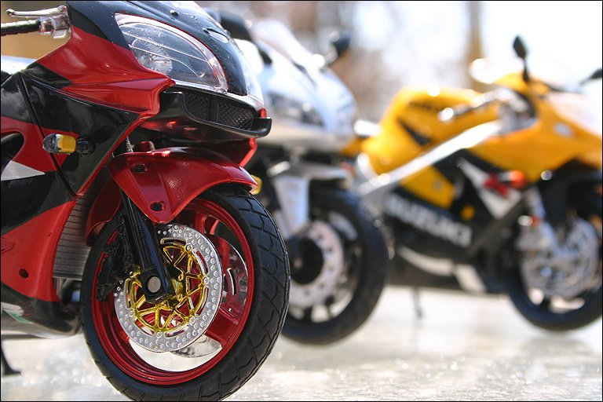
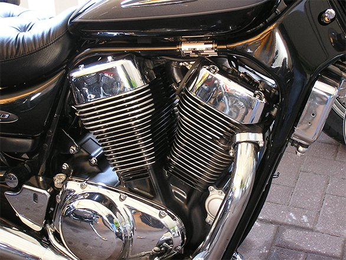
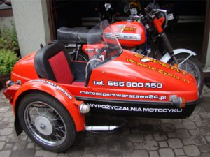
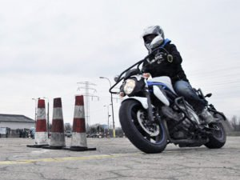
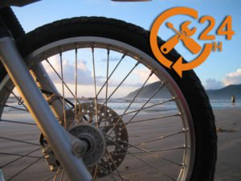
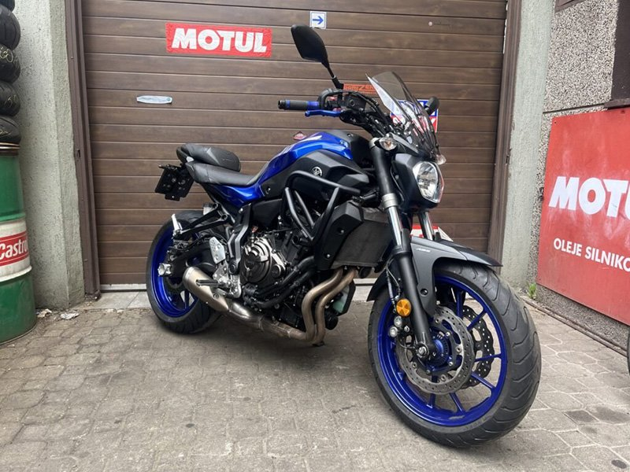
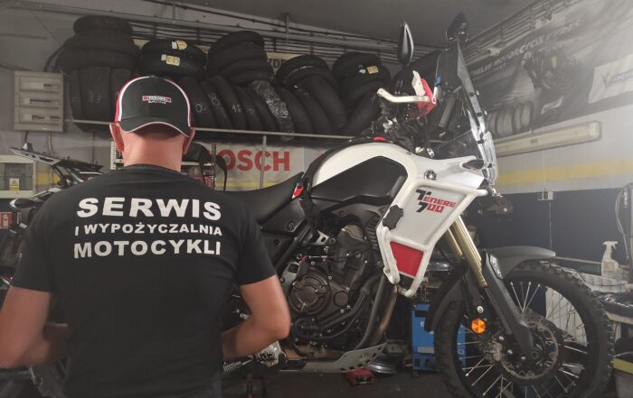
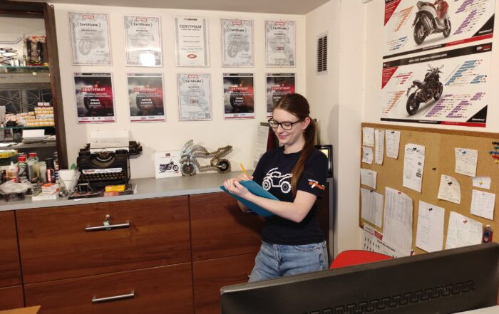
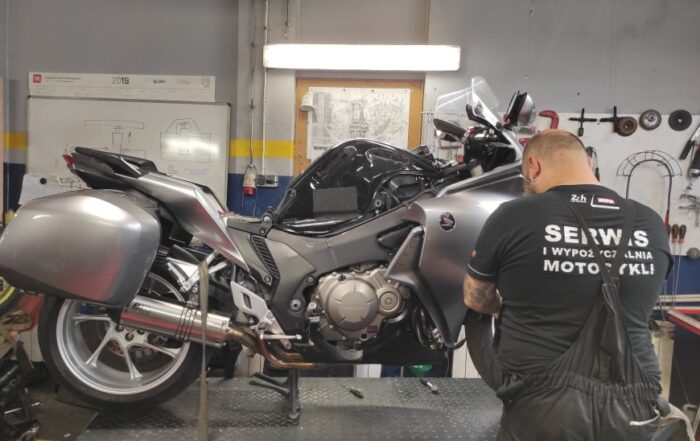

SERWIS MOTOCYKLI / WARSZAWA
PASJA BEZ
HAMULCÓW.
Pełen zakres usług serwisowych i napraw motocykli, skuterów i quadów.
Wypożyczalnia, szkoła jazdy i pomoc na drodze 24 godziny na dobę.
01 / NASZA OFERTA
TY WYBIERASZ TRASĘ.
MY DBAMY O RESZTĘ.
Od pierwszej lekcji do kolejnego sezonu.
W jednym miejscu, z ludźmi, którzy
żyją motocyklami.

01Serwis motocykli
↗Pełna obsługa motocykli, skuterów i quadów.
- Naprawy bieżące i powypadkowe
- Przeglądy przed zakupem
- Tuning optyczny i mechaniczny

02Wypożyczalnia
↗Motocykl na Twoich warunkach. Przejrzyste zasady wynajmu, bez ukrytych kosztów.
ZNAJDŹ SWÓJ MOTOCYKL
03Szkoła jazdy
↗Pierwszy krok do niezależności. Szkolenia i jazdy doszkalające w kategoriach A i B.
ZACZNIJ SWOJĄ PRZYGODĘ
24/7Pomoc motocyklowa
↗Pomoc techniczna, transport motocykli i quadów oraz dojazd do klienta. Zadzwoń: 666 600 550.
SPRAWDŹ POMOC 24H02 / MOTOEXPERT WARSZAWA
MOTOCYKLE.
TO U NAS
OSOBISTE.

Za każdą maszyną stoi człowiek.
I kolejna trasa do przejechania.
Zajmujemy się pełnym zakresem serwisu i napraw motocykli, skuterów oraz quadów. Działamy w Warszawie i okolicach — od bieżącej obsługi po przygotowanie motocykla do następnego sezonu.
Poznaj Motoexpert ↗motocykle · skutery · quady
i transport
POMOC MOTOCYKLOWA
TRASA NIE ZAWSZE
IDZIE ZGODNIE Z PLANEM.
Pomoc techniczna i transport motocykli oraz quadów.
Dojeżdżamy do Ciebie.
POLECAMY
OCHRONA POJAZDÓW
Z ŻYCIA MOTOEXPERT
Z WARSZTATU.
I POZA NIM.

DNI OTWARTE 2023 — VI edycja
Zaproszenie na szóstą edycję dni otwartych i darmowe przeglądy posezonowe.
Czytaj więcej ↗
Praca — doradca serwisowy
Ogłoszenie dla osób z wiedzą o mechanice i budowie motocykli.
Czytaj więcej ↗
Praca — mechanik motocyklowy
Serwis na Targówku poszukuje samodzielnego mechanika motocyklowego.
Czytaj więcej ↗Wpisy archiwalne — daty i odnośniki zgodne z obecną stroną.
Starsze wpisy ↗WIEDZA Z WARSZTATU
DOBRZE WIEDZIEĆ.
JESZCZE LEPIEJ JECHAĆ.
ZOBACZ NAS PRZY PRACY
SYNCHRONIZACJA
GAŹNIKÓW MOTOCYKLI
Wakuometr SynX Profi Line
▶ Zobacz cały film na YouTubeul. Jagiellońska 88
03-303 Warszawa
biuro.motoexpertwarszawa@gmail.com ↗